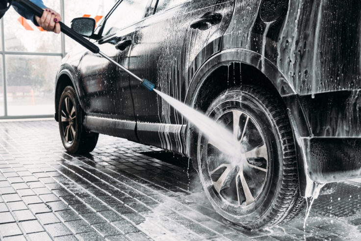

About Us
We are excite to provide the best services at your door.
We are excite to provide the best services at your door.
Car wash is a reasonable time and money investment that will yield a high ROI. Cleaning your car is essential due to several reasons. Your vehicle will appear clean and will also be more attractive to resell or trade-in value. You’ll be more relaxed and appear better when driving a clean and maintained car. Cleaning your vehicle regularly is a cost-effective option to safeguard its value and preserve its appearance.
Car paint is a specially formulated type of paint used to protect and enhance the appearance of automobiles. It serves several essential functions, including protection from corrosion and damage, enhancing aesthetics, and contributing to a vehicle's overall durability and resale value.

We are welcome to renovate your dream car.As per the requirement of the customer we are ready to serve the services.

Email: pdisha339@gmail.com
Phone: (123) 456-7890